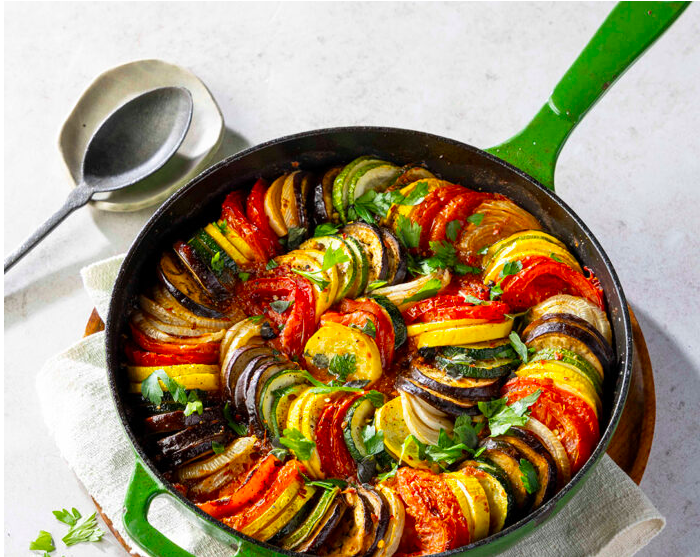

Classic French Ratatouille

A vibrant, hearty vegetable stew originating from Provence, France. Perfect as a side or light main dish.
Prep Time
15 minutes
Cook Time
40 minutes
Servings
4-6 servings
Difficulty
Easy to Medium
Ingredients
- 1 large onion chopped
- 2 cloves garlic minced
- 1 red bell pepper diced
- 1 yellow bell pepper diced
- 1 zucchini sliced
- 1 eggplant diced
- 4 large tomatoes chopped
- 2 tablespoons olive oil
- 1 teaspoon dried thyme
- 1 teaspoon dried oregano
- Salt and pepper to taste
- Fresh basil for garnish (optional)
Instructions
- Heat olive oil in a large skillet over medium heat. Add chopped onion and minced garlic, sauté until translucent.
- Add diced red and yellow bell peppers to the skillet. Cook for about 5 minutes until they start to soften.
- Add sliced zucchini and diced eggplant. Cook for another 7-10 minutes, stirring occasionally.
- Add chopped tomatoes, dried thyme, and dried oregano. Stir well to combine all ingredients.
- Reduce heat to low, cover the skillet, and let it simmer for about 20 minutes, stirring occasionally.
- Season with salt and pepper to taste. If the mixture is too watery, uncover and cook for an additional 5-10 minutes to thicken.
- Garnish with fresh basil if desired. Serve hot as a side dish or over rice/quinoa for a light main course.
Tips
- For added flavor, consider roasting the vegetables before combining them.
- This dish can be served warm or at room temperature.
- Leftovers taste even better the next day as the flavors meld together.
Nutrition Facts & More
Recipe Source